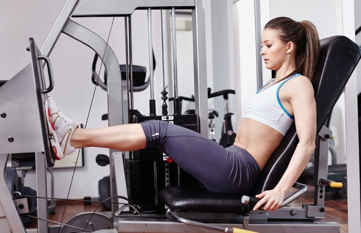
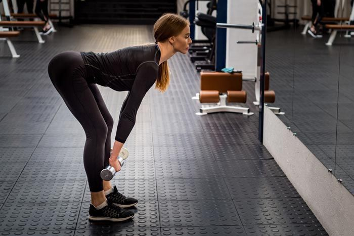

Coloca la barra en los trapecios o mancuernas a los lados. Con pies al ancho de los hombros, flexiona las rodillas y baja como si te sentaras, manteniendo la espalda recta y las rodillas detrás de los dedos de los pies.

4 series de 10-12 repeticiones
Prensa de pierna
Siéntate en la máquina de prensa de pierna con los pies al ancho de los hombros y la espalda apoyada. Empuja la plataforma hacia adelante estirando las piernas sin bloquear las rodillas, y regresa lentamente a la posición inicial.

3 series de 12 repeticiones
Peso muerto rumano
Sostén una barra o mancuernas frente a los muslos, pies al ancho de los hombros y rodillas ligeramente flexionadas. Inclina el torso hacia adelante, bajando el peso al suelo con la espalda recta y los hombros atrás, moviendo la cadera hacia atrás.
3 series de 12 repeticiones por pierna
Zancadas
De pie, con una mancuerna en cada mano o una barra sobre los hombros, da un paso adelante y baja hasta que ambas rodillas formen 90 grados. Regresa empujando con la pierna delantera y alterna.
20 o 30 minutos
Cardio
20-30 minutos en la caminadora con inclinación o elíptica a intensidad moderada
Recuerda realizar descansos de 30 a 60 segundos entre cada serie